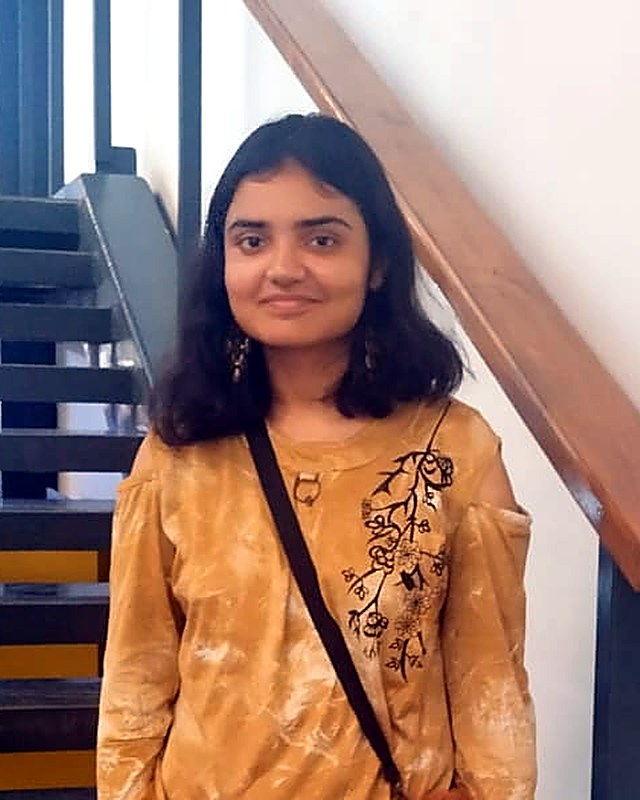

Priyanshi Kumari
Final-year CS undergraduate at KIIT University · AI/ML researcher
Computer Vision · Reinforcement Learning · Quantum Computing
I'm pursuing a B.Tech in Computer Science and Engineering at KIIT University (2023–2027) with a minor in Quantum Computing. My work sits at the intersection of AI, machine learning, computer vision, human–AI interaction, reinforcement learning, and embodied intelligence — with a focus on systems that stay stable outside the lab.

Featured Projects
07 case studiesOn GitHub
Priyuan
My GitHub profile README.
View repositoryPhonebook
Phonebook application.
View repositoryCode-alpha
Internship task work across four repositories.
View repository30 repositories — see all on GitHub.
Research Experience
08 labs-
Apr – Sep 2026Cambridge, UK
University of Cambridge
Research Intern
Representation learning for early prediction of cancer in women.
-
Jun – Aug 2026Remote
QRACE — Quantum Research and Centre of Excellence
Quantum Research Intern
Proposed a new quantum algorithm for NP-hard combinatorial problems.
-
Oct 2025 – PresentAberdeen, Scotland
Robert Gordon University
Research Intern · Dr Shahana Bano
Causal inference for bead-formation detection in WAAM (accepted, IJAMT); physics-based optimization for EDM (accepted, JMMP); RL for greenhouse climate control.
-
Sep 2025 – PresentGreenwich, England
University of Greenwich
Research Intern · Dr Razia Sulthana
Lightweight chest X-ray AI (Best Paper, IEEE IMSA), quantum algorithms for satellite imagery, quantum neural networks for lung nodules, and AI-enabled vertical farming.
-
Jun – Oct 2025Hyderabad, India
Thirsty Swan AI Labs
Research Intern · Dr Prudviraj
Vision-language models with knowledge-graph tracking for disease-symptom identification from arXiv figures via OCR.
-
May – Sep 2025Kent, England
Kent and Medway Medical School
Undergraduate Research Collaborator · Dr Zhongtian Sun, Dr Chee Siang Ang
Physics-informed GNN-CDEs for student mental-health forecasting; stable long-horizon rollouts where GRU/GCN/GAT baselines diverged.
-
Dec 2024 – May 2025Jamshedpur, India
National Institute of Technology Jamshedpur
Research Intern · Dr Diwakar Tripathi
Machine learning for women's health — breast cancer and PCOS detection; poster at AHFE International.
-
Jun 2024 – Apr 2025Lexington, Kentucky
University of Kentucky
Research Intern · Dr Christopher Crawford
Trapezoidal and boxcar filters on the Red Pitaya FPGA in Verilog, with a NumPy reference implementation.
Publications
11 papers-
A Lightweight CNN for Pleural Effusion Localisation and Multi-Class Chest X-Ray Classification in Resource-Constrained Settings
-
Towards Self Explaining WAAM Systems: From Causal Graph Discovery to Vision Interpretation in Weld Dynamics
-
An Intelligent Approach for Predicting Precision Machining of Wire EDM Process Using Machine Learning
-
Empowering Sustainable Vertical Farming Through IoT and AI-Driven Technologies: A Technical Blueprint with Insights from the UK and India
-
Machine Learning for Women's Health: Detecting Breast Cancer and PCOS
-
Dynamic Resource Allocation Using Quantum Algorithm and Game Theoretic Approach
-
An Open-Source Interactive Processor and Dual-Branch Fusion Model for Sentinel-2 Land-Suitability Mapping
-
Quantum Neural Network for Lung Nodule Detection
-
Reinforcement Learning for Greenhouse Climate Control and Optimization
-
An Open-Source Python Package for Satellite Imagery Using Quantum Algorithms
-
Physics-Aware Port-Hamiltonian Graph Neural Controlled Differential Equations for Stable Student Stress Forecasting
Full record on Google Scholar.
Education
-
2023 – 2027Bhubaneswar, India
KIIT — Kalinga Institute of Industrial Technology
B.Tech, Computer Science and Engineering · Minor in Quantum Computing
-
Feb 2021 – Feb 2023Jamshedpur, India
DAV Public School, Bistupur
Std 12 · Physics, Chemistry, Mathematics, Biology
-
2008 – 2021Jamshedpur, India
Sacred Heart Convent School
Std 10
Awards & Certifications
- Best Paper in Session — IEEE IMSA Conference, Giza, Egypt
- Certificate of Appreciation — IEEE IMSA Conference, Egypt
- Tata Steel Millennium Scholarship, 2024
- Semi-finalist, EY Techathon 6.0
- Flipkart Runway Season 5
- Myntra HackerRamp We for She, 2024
- GIAC Python Coder (GPYC)
- Notebook Modeler
- Health Systems Development — Introduction to Health Systems
- Certificate of Research Paper Presentation
Toolkit
Languages
- Python
- Verilog
- SQL
- LaTeX
Frameworks
- PyTorch
- PyTorch Geometric
- scikit-learn
- Qiskit
Tools
- NumPy · Pandas
- OpenCV
- Weka
- Git · Jupyter
Languages spoken
- English — full professional
- Hindi — native
- German — elementary